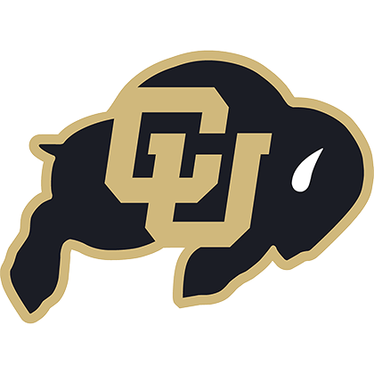

Bachelor of Science in Computer Science
University of Colorado Boulder
Education
Computer science foundations, from systems and algorithms to AI and entrepreneurship.

University of Colorado Boulder
I have also begun graduate-level studies focused on autonomous systems for space exploration. These studies are currently on hold.